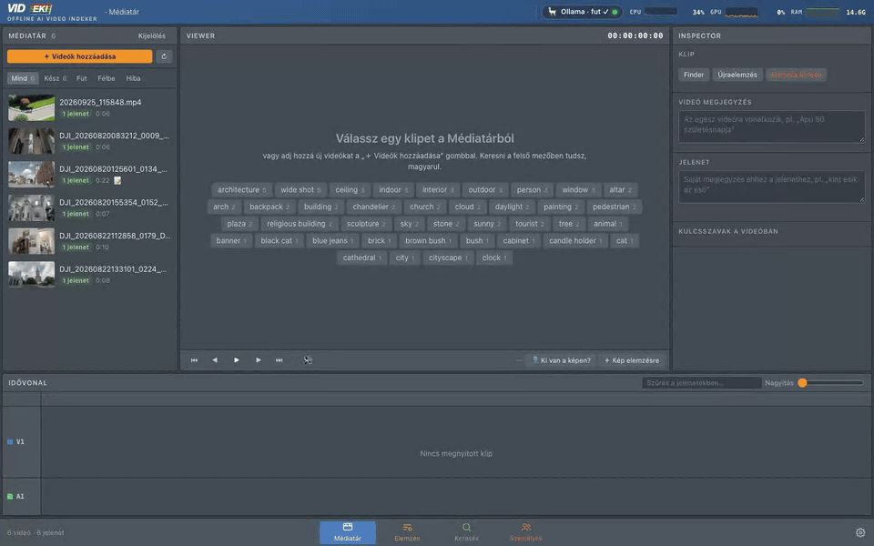
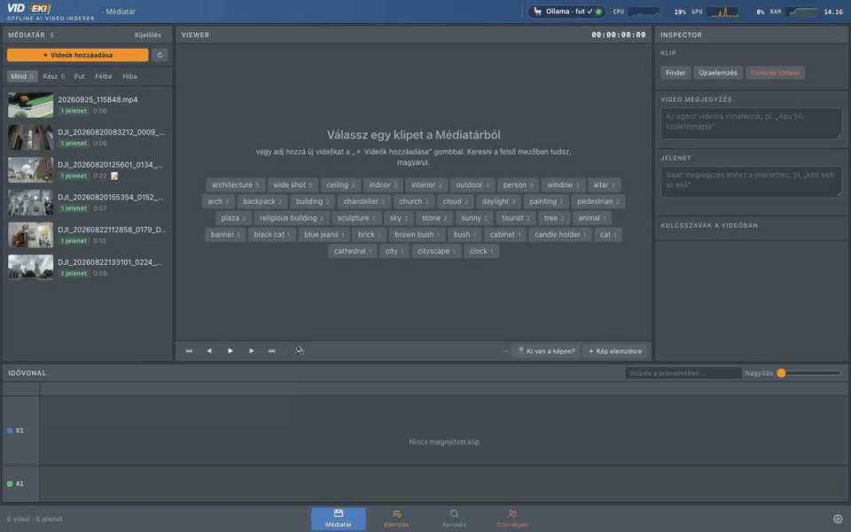
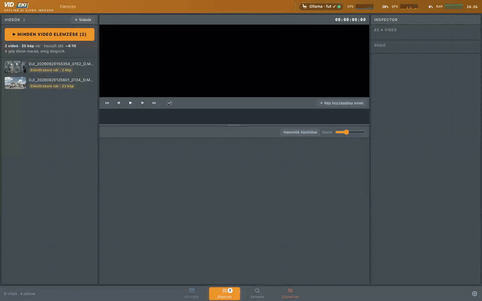
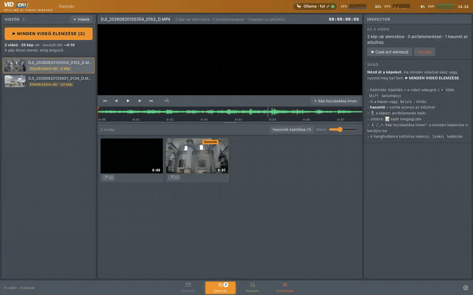
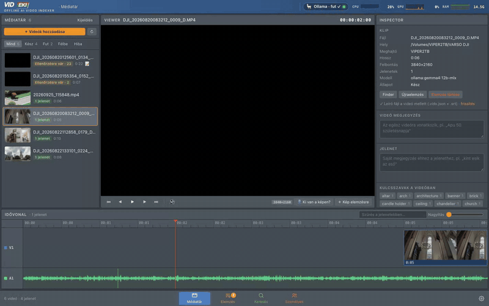
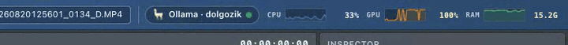

Never scrub through hours of raw footage again.
Let VIDEKI generate a searchable SRT scene log for your timeline.

Cloud video AI means uploading raw footage – yours or your client's – to someone else's servers. VIDEKI does the opposite: it installs a complete AI brain on your machine and keeps everything there.
Every frame is analysed on your own CPU and GPU. Nothing is uploaded, no account, no telemetry. Client footage under NDA? It stays on your SSD.
VIDEKI uses your Mac's own hardware. It builds your searchable SRT scene logs even in a mountain cabin, far from any Wi-Fi signal.
Cloud APIs charge per call and per credit. A local AI runs as long as there is power – index a thousand clips tonight, and never pay a monthly fee for it.
Pick your videos in the evening, glance over the frames, press one button – and in the morning every clip can be found by what is in it.
Drag clips or whole folders onto VIDEKI, or pick them in Finder. Nothing is copied or uploaded – VIDEKI just finds them where they are.
DJI footage with .LRF proxies is analysed from the light proxy; 4K LOG clips are colour-corrected for the AI only.

VIDEKI grabs a frame at every scene change (or every few seconds), right under the video and its audio waveform. Delete near-duplicates in one click, switch face recognition on or off per frame, add your own notes – “Dad turns 50, it's raining outside” – and add any frame by hand.

One button analyses every opened video. The Mac stays awake while it works; the live monitor shows your own CPU, GPU and RAM sweating – not a remote server.

Type seagulls, church, a person's name or one of your notes. Keyword and meaning-based search work together – even across languages. Results show every clip with the exact scenes and timecodes, even when the drive is unplugged.
Click a result and the viewer lands on the second. A Resolve-style timeline shows every scene on V1 and the audio waveform on A1 – scrub, read the AI's description and tags in the Inspector, and know who is in the frame.

Next to every video VIDEKI writes small sidecar files – they travel with your footage, and the index can always be rebuilt from them.
CLIP.srta scene log as subtitles – drop it on the DaVinci Resolve timeline and see what is in every shot
CLIP.vidx.jsonscenes, descriptions, tags, people and notes – renamed or moved clips are re-paired by fingerprint
VideoIndex_DaVinci_metadata.csvKeywords + Description for the Resolve Media Pool (Import Metadata)
CLIP.LRFDJI proxies are used for fast analysis and preview
Name a face once – VIDEKI finds that person in every other clip. Uncertain matches wait for your ✓ or ✕.
Tag what the camera can't see: an event, a birthday, the weather. Notes are searchable and go into the SRT.
A live CPU / GPU / RAM monitor in the corner shows that the work happens here.

| Space | play / pause |
| ← → | one frame back / forward · with Shift: previous / next scene |
| A | add the current frame for analysis |
| ⌫ | delete the selected frames (review) |
| ⌘K | search |
VIDEKI is becoming a native Apple Silicon app. Drag it into Applications, open it – and that's it.
No Terminal, no Python, no setup scripts. A short welcome screen downloads the local AI engine and models once, with a progress bar – then it works offline forever.
VIDEKI picks the right model for your memory: Gemma 4 12B on 16–32 GB machines, the larger 26B model on a Mac Studio – using the Apple GPU through MLX.
External SSDs, DJI LRF proxies, 4K LOG footage, DaVinci Resolve – VIDEKI fits into the workflow you already use.